Здесь вы найдете информацию о фитнесе. Описание и дополнительная информация о доступных разделах.
Мы предлагаем:
Ознакомить людей с базовыми понятиями разных дисциплин
Разнообразные программы тренировок
Диеты
Различные меню
Фитнес подразумевает общую физическую подготовку, включающую не только работу над мышечной массой, но и развитие гибкости, выносливости, координации. Это подразумевает сочетание физических тренировок с правильно подобранным питанием, соблюдением режима дня — все, что относится к здоровому образу жизни. Фитнес-упражнения улучшают состояния сердечно-сосудистой системы, укрепляют мышцы и помогают избавиться от лишнего веса. Новые исследования показали, что он имеет и не столь широко известные полезные свойства, в числе которых улучшение слуха, внимания.
Эксперименты показали, что занятия физической активностью в течение жизни значительно снижали риск деменции и болезни Альцгеймера в старости. Кроме того, даже у тех, кто начинал занятия в пожилом возрасте, улучшалось внимание и концентрация. изкультура и спорт тренируют наши мышцы, систему кровообращения, силу, выносливость организма, положительным образом влияют на иммунитет, состояние здоровья, молодость и красоту, сохраняют способность к труду и активному образу жизни на долгие, долгие годы.
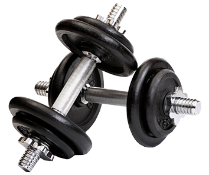
ТУРНИКИ И БРУСЬЯ
Главной проблемой большинства новичков, которые приходят на уличные турники и брусья, является абсолютное не знание того, что нужно делать для получения результата. У них нет ни опыта, ни знаний. Поскольку большинство площадок до сих пор большую часть времени пустуют, интернет становится единственным средством получения информации и самообразования.
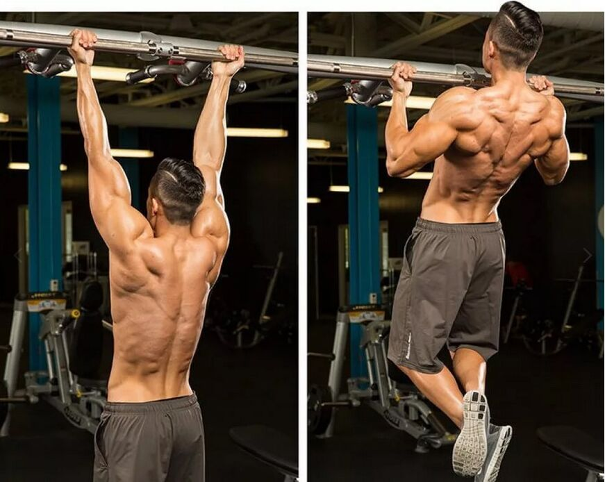
Круговая тренировка из подтягиваний и отжиманий:
Вот программа легендарного Ганнибала для тех, кто только начинает заниматься на турниках и брусьях:
Подтягивания узким хватом (верхним или нижним) - 1-3 подхода по 5-10 повторений
Отжимания на брусьях - 1-3 подхода по 10 повторений
Алмазные отжимания - 1-3 подхода по 10-15 повторений
Приседания (ступни вместе) - 1-3 подхода по 20 повторений
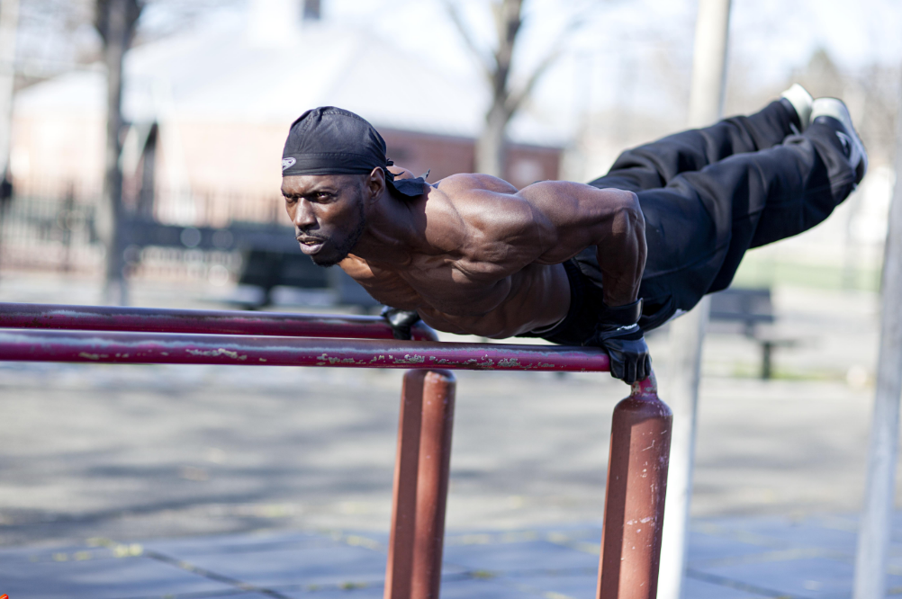
Тренировка с акцентом на грудные мышцы:
Отжимания от пола с ногами на возвышенности - 4 подхода по МАКСИМУМ повторений с отдыхом 2 минуты
Отжимания спиной от скамейки - 4 подхода по МАКСИМУМ повторений с отдыхом 2 минуты
Обычные отжимания - 4 подхода по МАКСИМУМ повторений с отдыхом 2 минуты
Отжимания от скамейки - 4 подхода по МАКСИМУМ повторений с отдыхом 2 минуты
Подъемы на носки - 4 подхода по МАКСИМУМ повторений с отдыхом 1 минута
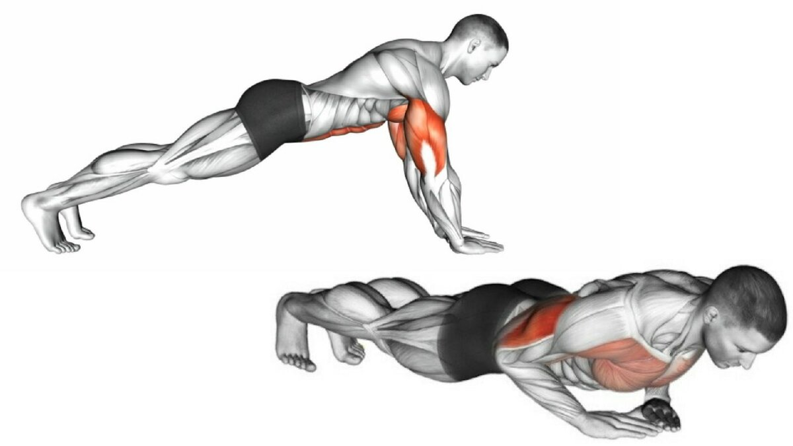
Программа тренировки на все мышечные группы (FULL BODY):
Автором этой программы является Крис Карлссон, получивший известность благодаря своему каналу Calisthenics & Weight Training. Он объединил все основные базовые упражнения в одну схему:
Австралийские подтягивания (перекладина тянется на уровень груди) - 3-5 подходов по 15-20 повторений
Отжимания от пола - 2-3 подхода по 15-20 повторений
Приседания - 2-3 подхода по 15-20 повторений
Выпады - 2-3 подхода по 10 повторений (на каждую ногу!)
Подъемы на носки - 2-3 подхода по 15-20 повторений (поочередно) или по 10 подряд на каждую
Пиковые отжимания - 2-3 подхода по 10 повторений
Высокие австралийские подтягивания (перекладина на уровень плеч тянется) - 2-3 подхода по 10-15 повторений
Скручивания или подъемы коленей к груди в висе - 2-3 подхода по 10-15 повторений
Планка - 3-5 подходов на максимум
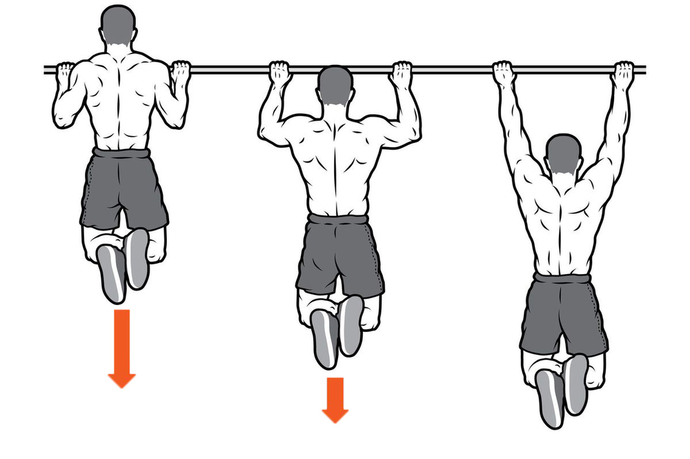
ВАЖНО!
Отдых между подходами и упражнениями - от 30 секунд до 3 минут в зависимости от вашего уровня, подбирайте таким образом, чтобы выполнить все упражнения в хорошем качестве, но чтобы было тяжело.
ГАНТЕЛИ
Если вы предпочитаете заниматься в домашних условиях, то предлагаем вам готовую силовую программу для мужчин фулбоди, которую можно выполнять в любое удобное время дома. Для работы понадобится всего лишь пара гантелей и огромное желание построить красивое, здоровое и мощное тело. Накачаться дома – это реально, читайте прямо сейчас, что нужно делать.
ПРИСЕДАНИЯ С ГАНТЕЛЯМИ:
Работающие мышцы: бицепсы, квадрицепсы и приводящие бедер, средние и большие ягодичные мышцы, пресс, мышцы предплечий, бицепсы.
Как выполнять:
В каждую руку возьмите по гантеле и встаньте прямо, ноги на ширине плеч. Согните руки в локтях, положив гантели на плечи. Опуститесь в приседание, слегка прогибаясь в пояснице, чтобы не сгибать спину. Следите, чтобы колени находились на одной линии с носками, для этого не приседайте слишком низко – бедра должны быть параллельны полу.
Если трудно держать равновесие, то поставьте ноги немного шире. Зафиксируйте руки в одном положении, это тоже поможет вам держать баланс и сконцентрироваться на приседаниях – лучшем силовом упражнении для ног в домашних условиях, которое можно делать регулярно.
Наклонитесь вперед с прямой спиной, немного согнув ноги в коленях. Возьмите в обе руки гантели нейтральным хватом. Держите спину ровно на одной линии с шеей и головой. Тяните гантели вверх до линии корпуса, при этом работают мышцы спины, а не руки. Можно поднимать гантели сразу на обе руки или попеременно, если у вас большой вес отягощений.
При выполнении упражнения не меняйте положения корпуса, он должен находиться неподвижно, в таком случае будут работать целевые мышцы спины. Выполняйте это отличное силовое упражнение в домашних условиях, и вскоре получите широкую и крепкую спину.
Наклонитесь вперед с прямой спиной, немного согнув ноги в коленях. Возьмите в обе руки гантели нейтральным хватом. Держите спину ровно на одной линии с шеей и головой. Тяните гантели вверх до линии корпуса, при этом работают мышцы спины, а не руки. Можно поднимать гантели сразу на обе руки или попеременно, если у вас большой вес отягощений.
При выполнении упражнения не меняйте положения корпуса, он должен находиться неподвижно, в таком случае будут работать целевые мышцы спины. Выполняйте это отличное силовое упражнение в домашних условиях, и вскоре получите широкую и крепкую спину.
Возьмите в руки гантели и встаньте прямо, лучше – перед зеркалом. Опустите руки вниз и согните их в локтях под небольшим углом. Начинайте разводить руки в стороны, при этом локти развернуты назад. Поднимайте обе руки синхронно до параллели с полом, спустя пару секунд – опускайте в исходную позицию. Руки не распрямляйте, они должны быть немного согнуты в локтях.
Неправильная техника приводит к другим акцентам во время тренировки, например, задействуются трапеции, что снижает нагрузку на целевые мышцы. Выполняйте правильно эффективное силовое упражнение в домашних условиях, чтобы накачать плечи.
РАЗГИБАНИЕ ГАНТЕЛИ ИЗ-ЗА ГОЛОВЫ:
Работающие мышцы: трицепсы, локтевая мышца.
Как выполнять:
Возьмите гантель и сядьте на скамью. Спина прямая, ноги стоят устойчиво. Держите снаряд вертикально двумя руками, ладонями вверх. Поднимите гантель на прямых руках над головой и начинайте медленно сгибать руки в локтях, опуская снаряд вниз за затылок. Можно выполнять это упражнение и стоя, но в положении сидя трицепс получит более акцентированную нагрузку.
При сгибании и разгибании рук важно не делать резких движений, чтобы не вывихнуть плечевой сустав или не задеть себя гантелью. Также важно не разводить локти в стороны, что снижает эффективность упражнения. Выполняйте это несложное силовое упражнения в домашних условиях, чтобы «раскачать» трицепсы, ведь именно они отвечают за объем в верхней части рук.
ТАГА В НАКЛОНЕ (Аьтернатива подтягиваниям):
Работающие мышцы: широчайшие, ромбовидные и большие круглые мышцы спины, трапеции, задние дельты.
Как выполнять:
Наклонитесь вперед с прямой спиной, согнув ноги в коленях. Руки с гантелями опущены вниз параллельно ногам. Держите гантели горизонтально. Не наклоняйтесь слишком сильно, грудь должна быть направлена вперед. Тяните гантели к корпусу, сгибая руки в локтях. Следите, чтобы локти сгибались под прямым углом. В верхней точке сводите лопатки, чтобы работал весь спектр мышц спины.
Во время этого упражнения важно не сгибаться в пояснице, иначе можно травмироваться. Сохраняйте легкий прогиб в спине, который поможет предотвратить травму. В силовой тренировка фулбоди особое внимание принадлежит тренировке спины, ведь именно здесь сосредоточен самый большой комплекс мышц, который влияет на внешний вид всего тела.
ВЫПАДЫ ВПЕРЕД:
Работающие мышцы: квадрицепсы бедер, средние и большие ягодичные, приводящие мышцы бедер, косые мышцы живота.
Как выполнять:
Возьмите в руки снаряды и сделайте широкий шаг вперед, опускаясь в выпад. Вернитесь обратно и повторите другой ногой. При выполнении выпадов вперед держите гантели на вытянутых вниз руках. Постарайтесь не раскачивать их, иначе это помешает вам держать равновесие. Спину не сгибайте, смотрите прямо вперед.
Не сгибайте колени под острым углом, иначе не только нарушится техника, но и увеличится нагрузка на коленные суставы.
ВАЖНО!
Отдых между подходами должен составлять не менее 10 минут
КУБИКИ
Хотите получить красивые рельефные кубики на животе, активно тренируетесь, но ожидаемого результата все нет? А вы изучали анатомию этой части тела? Возможно, ваш пресс просто спрятался за прослойкой жира. Ведь для того, чтобы нарастить мышцы, нужно обеспечить профицит калорий, а значит, увеличится не только объем мышечной, но и жировой массы. Новичкам в этом смысле проще: их организм может одновременно худеть и набирать мышечную массу, так как еще не успел адаптироваться к постоянным нагрузкам. В этой статье разберемся, как нужно качать пресс, чтобы убрать живот, и почему бессмысленно делать такие упражнения каждый день.
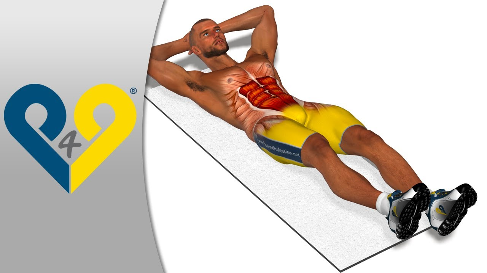
АНАТОМИЯ МЫШЦ ЖИВОТА:
Мышцы живота предназначены для поддержания внутренних органов на своих местах, защиты их от внешних воздействий и обеспечения движения тела в процессе жизнедеятельности (повороты и боковые наклоны торса, подъем таза, сгибание позвоночника). И именно поэтому, чтобы накачать красивые кубики на животе, необходимо во время упражнений в различных плоскостях использовать такие движения, как сгибания ног, наклоны, повороты, скручивания и т. д. Итак, какие мышцы пресса нужно нагружать?
Прямая:
Расположена вертикально по всей длине брюшной стенки ближе к средней линии, состоит из двух параллельных мышц, разделенных на три части поперечными сухожилиями. Участвует в подъеме таза и сгибании позвоночника. Без проработки этой мышцы кубики пресса не появятся.
Наружная косая:
Находится в передней и боковой части живота, поднимаясь до груди. Эта мышца брюшного пресса участвует в сгибании позвоночника, скручиваниях, подъеме таза.
Внутренняя косая:
Расположена сбоку от средней линии под наружной косой мышцей живота. При ее проработке нужно выполнять такие упражнения, как скручивания (диагональные и боковые).
Поперечная:
Расположена спереди по обеим сторонам от средней линии живота. Это самый глубокий слой мышц кора. Отвечает за поддержку брюшной стенки и стабилизацию позвоночника и таза.
Пирамидальная:
Находится в районе нижней части живота, выполнена в форме треугольника. Есть не у всех, минимум у 8% она отсутствует, так как является рудиментарной.
ВАРИАНТЫ УПРАЖНЕНИЙ:
Подтягивание ног к груди на фитболе:
При выполнении упражнения работают прямая и внешние косые мышцы живота, задействуются бедра и ягодицы. Как делать это упражнение на пресс, чтобы убрать живот? Лежа на животе, поставьте руки на ширине плеч. Выпрямленные ноги в области голени положите на мяч. На выдохе подтяните колени к груди, перекатив мяч вперед. Спина должна оставаться прямой. Напрягая пресс, задержитесь ненадолго в этом положении. На вдохе вернитесь в исходное положение, медленно выпрямляя ноги и перекатывая фитбол назад.
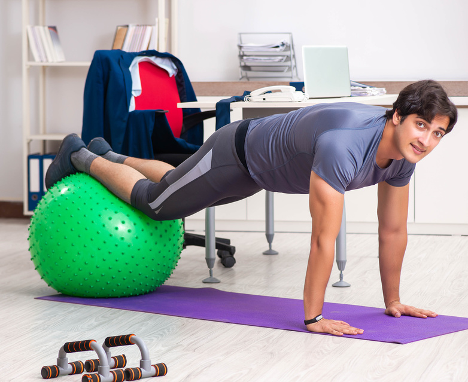
Подъем ног с упором на предплечье:
Прорабатывается прямая мышца живота, задействуются подвздошно-поясничная и прямая мышца бедра, грудино-ключично-сосцевидная, большая грудная, дельтовидная, двуглавая и трехглавая мышцы плеча. Поставьте ноги на нижние перекладины, а предплечья положите на верхние. Возьмитесь за рукояти. Позвоночник прижмите к спинке. Ноги в прямом положении опустите вниз. С выдохом согните ноги в коленях и подтяните. Чтобы обеспечить постоянное прилегание поясницы к тренажеру, во время подхода необходимо напрячь и не расслаблять живот. На вдохе медленно опустите ноги, не расслабляя пресс.
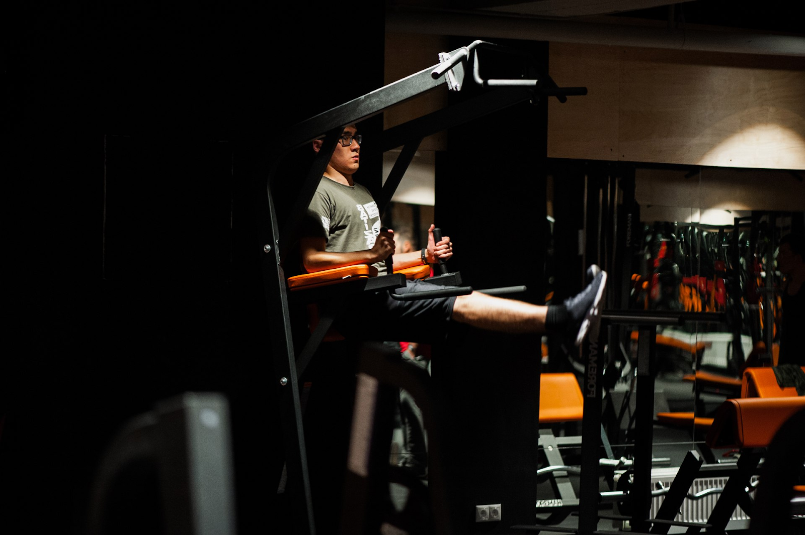
Ситап:
Еще одно знакомое с детства эффективное упражнение для получения рельефного живота с кубиками. Примите исходное положение, лежа на горизонтальной поверхности с согнутыми ногами. Стопы поставьте ровно на пол. Руки держите в районе ушей или перед собой, но не за головой, чтобы не подтягивать себя. На выдохе верхнюю часть туловища поднимите под углом 45˚. Задержавшись в этом положении, вернитесь в исходную позицию.
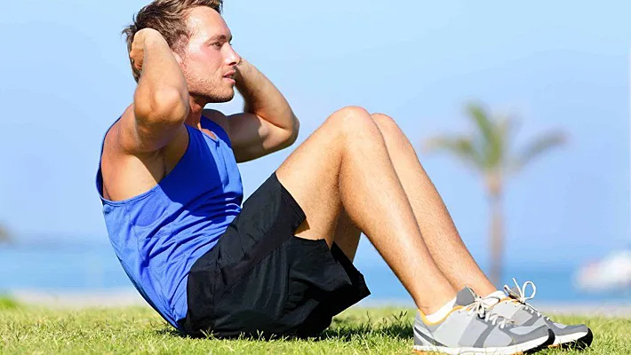
Подъем ног вверх из положения лежа:
Чтобы проработать кубики пресса, лягте на спину с вытянутыми прямыми ногами. Руки расположите под ягодицами ладонями вниз. Сведенные вместе прямые ноги на выдохе согните под прямым углом. Задержитесь в этой позиции и на вдохе медленно примите исходное положение.
ГЛАВНОЕ:
Если вы решили накачать кубики пресса, настройтесь на регулярные тренировки, но не занимайтесь каждый день. Достаточно тренировать мышцы живота 1–2 занятия в неделю.
Вы не увидите на себе эффекта кубиков, пока не избавитесь от прячущего их жира, поэтому наряду с физической активностью ограничьте себя в калориях.
МЕНЮ ДЛЯ НАБОРА
Набор мышечной массы — это система, и если её придерживаться, все получится. Главное в этой системе понимать самый важный принцип питания — съедайте ровно столько, сколько нужно вашему организму для роста мышц, и тогда у мышц просто нет шанса не вырасти.
Питаться в течение дня в рамках калорийности — это только половина дела. Вместе с этим нужно придерживаться в еде баланса белков, жиров и углеводов. Нельзя просто налопаться сникерсов или беляшей — мышцам это не поможет. Поэтому нужно настроить своё питание так, чтобы всю калорийность съедать в правильной пропорции:
Есть можно любую еду без ограничений — прям совсем. Главное соблюдать правильную пропорцию БЖУ. Если вы до этого сидели на диетах и вам казалось, что мало кушать сложно, то вас ждёт новое открытие — много кушать сложнее.
НЕДЕЛЬНЫЙ РАЦИОН ПИТАНИЯ ДЛЯ НАБОРА МЫШЕЧНОЙ МАССЫ:
Мы дадим вам готовый рацион, но советуем его не просто съедать, а взвешивать все продукты и заносить данные в FatSecret. На этом этапе вам не нужно подыскивать подходящие продукты, которые уложатся в соотношение БЖУ. Остаётся только вносить продукты и следить за калорийностью — так гораздо легче начать осваивать систему питания. Если в FatSecret нет продукта, ищите его калорийность на упаковке и в интернете.
Также можно использовать свои варианты приготовления.
Перекусы также можно менять местами, либо свои варианты, близкие по КЖБУ.
Пить воду ~30 мл на 1 кг веса.
День 1:
Завтрак 8–9 утра
Яйца (варёные/жареные) — 2 шт.
Тост или зерновой хлеб 50 гр.
+ мягкий творожный сыр 15 гр;
+ авокадо 75-100 гр;
+ руккола;
+ помидор
+ соль перец.
Обед в 12:30
Фарш индейки 400 гр:
+ яйцо 2 шт
+ соль перец
+ лук (по желанию)
150 гр риса (в сухом виде)
Овощной салат
Перекус в 15:30
Орехи макадамия 30 гр. Можно заменить вымоченным миндалём или грецким орехом. Вымойте орехи, залейте на ночь горячей водой, промойте утром и возьмите с собой.
Ужин в 19:00
Филе бедра куриного 400 гр
+ лук репчатый;
+ шампиньоны 200 гр;
+ сыр моцарелла для пиццы 100 гр;
+ сыр моцарелла для пиццы 100 гр;
150 гр риса (в сухом виде)
Большой овощной салат
Перекус в 21–22 часа
Протеин, соблюдая КБЖУ.
День 2:
Завтрак до 9 утра
Омлет: 2 желтка + 4 белка.
+ молоко 50 гр.
+ 5 гр сливочного или топлёного масла.
Сыр для жарки 30 гр.
Овощи + зелень.
Обед в 12:30
Паста перья 250 гр.
Куриное филе 300 гр.
Соус-песто «Вкусвилл».
Помидоры черри.
Перекус в 15:30
Чашка ягод 200-300 гр или банан.
Ужин в 19:00
Бедро индейки натереть.
+ любимые специи;
+ фольга;
Кусок мяса посолить добавить специи, завернуть в 3 слоя фольги. Запекать 60 минут на 200 градусах
Овощной салат
Перекус до 22 часов
Протеин, соблюдая КБЖУ.
День 3:
Завтрак до 9 утра
Геркулес долгой варки 100 гр.
2 стаканы воды: 1 стакан молока.
Горсть ягод.
Арахисовая паста 30 гр.
Обед в 12:30
Бедро индейки натереть.
+ любимые специи;
+ фольга;
Кусок мяса посолить добавить специи, завернуть в 3 слоя фольги.
Перекус в 15:30
Чашка ягод 200-300 гр или банан 1 шт.
Ужин в 19:00
Филе бедра куриного 500 гр.
+ йогурт греческий 70 гр;
+ чеснок +помидор;
+ сыр твёрдый 100 гр;
Большой овощной салат
Перекус до 22 часов
Протеин, соблюдая КБЖУ.
День 4:
Завтрак до 8-9 утра
Хлеб бездрожжевой 50 гр (или гречневые хлебцы dr.Corner 3 шт).
+ творожный сыр 20 гр;
+ авокадо 30 гр;
+ руккола;
+ огурец;
+ сёмга или форель среднесолёная 50 гр;
Обед в 12:30
Филе бедра куриного 500 гр.
+ йогурт греческий 70 гр;
+ чеснок;
+ помидор;
+ сыр твёрдый 100 гр;
Булгур 150 гр в сухом виде.
Овощной салат.
Перекус в 15:30
Хлебцы dr.Korner гречневые или рисовые 2 шт.
Сыр 30 гр
Ужин в 19:00
Фарш индейки 400 гр.
+ яйца 2 шт;
+ соль;
+ перец;
Овощной салат
Перекус до 22 часов
Протеин, соблюдая КБЖУ.
День 5:
Завтрак до 8-9 утра
Лаваш 40 гр.
Сыр сулугуни 40 гр.
Яйца 2 шт.
Обед в 12:30
Филе куриного бедра куриного 400 гр.
+ лук репчатый;
+ шампиньоны 200 гр;
+ сыр моцарелла для пиццы 100 гр;
+ сыр творожный 1 ст.л;
Рис 150 гр или макароны 200 гр.
Перекус в 15:30
Хлебцы dr.Korner гречневые или рисовые 2 шт.
Сыр 30 гр.
Ужин в 19:00
Фарш индейки 400 гр.
+ яйца 2 шт;
+ соль;
+ перец;
+ лук по желанию;
Перекус до 22 часов
Протеин, соблюдая КБЖУ.
День 6:
Завтрак до 8-9 утра
Творог 5% 300 гр.
+ яйцо 1 шт;
+ рисовая мука 3–4 столовые ложки;
+ заменитель сахара;
Сметана или греческий йогурт 2 столовые ложки.
Ягоды или банан.
Обед в 12:30
Фарш индейки 400 гр.
+ яйцо 2 шт;
+ соль перец;
+ лук (по желанию);
150 гр риса (в сухом виде).
Овощной салат.
Перекус в 15:30
Американо.
Кокосовое масло 1,5 чайные ложки или масло гхи.
Ужин в 19:00
Салат.
+ помидоры;
+ огурцы;
+ руккола;
+ красный лук;
+ филе куриное жареное 200–250 гр;
+ яйцо жареное 1 шт;
+ оливковое масло 5 гр;
Перекус до 22 часов
Протеин, соблюдая КБЖУ.
День 7:
Завтрак до 8-9 утра
Хлеб бездрожжевой 50 гр (или гречневые хлебцы dr.Corner 3 шт).
+ творожный сыр 20 гр;
+ авокадо 30 гр;
+ руккола;
+ огурец;
+ сёмга или форель среднесолёная 50 гр
Обед в 12:30
Филе бедра куриного 500 гр.
+ йогурт греческий 70 гр;
+ чеснок;
+ помидор;
+ сыр твёрдый 100 гр;
Булгур 150 гр в сухом виде.
Овощной салат.
Перекус в 15:30
Какао порошок 1 столовая ложка.
Кипяток 200 мл.
Горячее молоко 200 мл.
Сахарозаменитель.
Ужин в 19:00
Помидоры.
+ огурцы;
+ руккола;
+ красный лук;
+ тунец консерв.в собственном соку 200 гр;
+ маслины 30 гр;
+ 2 яйца+оливковое масло 5 гр;
Перекус до 22 часов
Протеин, соблюдая КБЖУ.
ЗАПОМНИТЬ:
1. Для набора мышечной массы нужно много есть.
2. Рассчитайте свою калорийность по формуле и съедайте её в пропорции 35% белков, 35% углеводов, 30% жиров.
3. Составьте план питания, и придерживайтесь его — иначе съедать такие объёмы будет тяжело.
4. Измельчайте крупу в блендере, добирайте гейнером, не курите.
5. Не доверяйте базе данных FatSecret и проверяйте КБЖУ на упаковке.
МЕНЮ ДЛЯ ПОХУДЕНИЯ
Наш организм сродни автомобилю — ему нужно определённое количество калорий в правильном соотношении белков, жиров и углеводов. И если заправлять его правильным топливом, тело неизбежно начнёт сбрасывать запасы жира без потерь для здоровья.
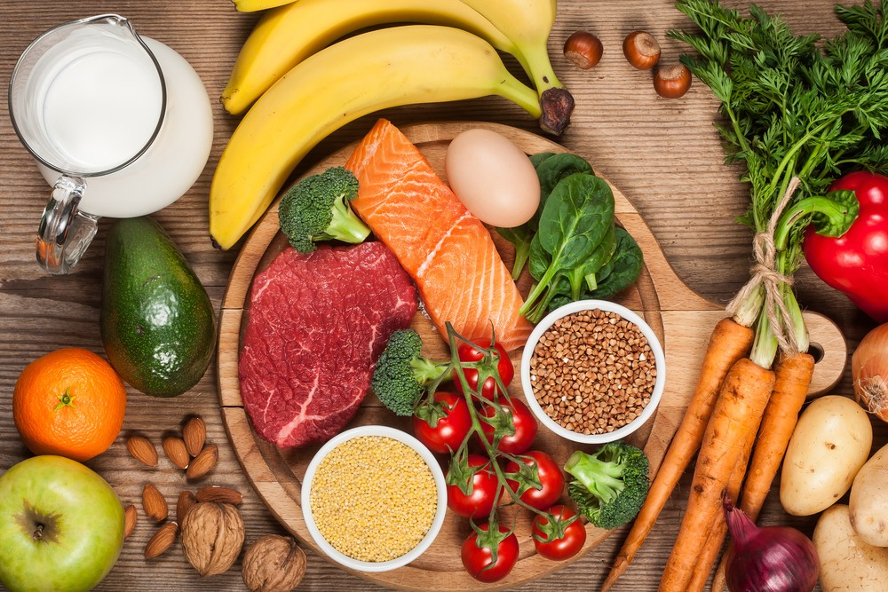
Давайте договоримся - если написано, что что либо есть нельзя, то значит нельзя, иначе результата не будет.
Главное правило, которого нужно придерживаться — не доводить себя до чувства голода. И это подтверждает исследование: те, кто питаются 5 раз в день, меньше испытывают чувство голода. При этом у большинства людей нет времени на такое количество приёмов пищи, да и организм не привыкший. Поэтому мы рекомендуем начинать с трёх приёмов пищи в день и каждую неделю добавлять по одному приёму.
СКОЛЬКО ПИТЬ ВОДЫ:
Не существует точной цифры, сколько литров воды нужно выпивать, чтобы быть здоровым. А обязательные 2 литра воды в день — миф маркетологов. Представитель ВОЗ рекомендует пить не менее литра, потому что иначе — обезвоживание. А в остальном прислушивайтесь к своему организму, уровню активности и чувству жажды.
Чтобы понять своё комфортное количество воды, выпивайте по стакану 250 мл каждый час, начиная утром. Так, за рабочий день выходит около двух литров. Во время тренировки выпивайте ещё 0.5–1 литр, в зависимости от того, как вы потеете. Всё это время прислушивайтесь к своим ощущениям и корректируйте объём воды.
Ещё у некоторых людей из-за большого количества воды снижается аппетит, поэтому нужно поискать комфортный уровень путём экспериментов и постепенного нарастания.
День 1:
Завтрак для похудения
2 яйца всмятку или вкрутую.
Огурец.
Помидор.
Кусочек цельнозернового хлеба.
Творожный сыр 40 граммов.
Чай.
Перекус
Творог 1% 150 граммов.
Половина банана.
Корица по вкусу.
Обед
Бурый рис или гречка 60 граммов в сухом виде.
Фарш куриной грудки 160 граммов (2 котлеты, запечь без масла).
Овощи.
Полдник
Банан, яблоко.
10 орехов фундука.
Ужин
Салат из свежих овощей 250 граммов.
Чайная ложка масла.
Грудка индейки 150 гр в сыром виде (запечь без масла или отварить).
В остальные дни недели повторите меню. Можно заменять продукты, но с тем же соотношением КБЖУ. Например, минтай заменить кальмаром, булгур заменить кускусом или рисом.
Мясо в меню заменяйте осторожно: бедро всегда калорийнее и жирнее грудки, а говядина, свинина и баранина сильно калорийнее и жирнее птицы. Узнавайте КБЖУ продуктов на упаковке и в интернете, не стесняйтесь просить калорийную карту в ресторанах и кафе, экспериментируйте!
ЗАПОМНИТЬ:
1. Похудение — это не лайфхаки и соблюдение строжайшей диеты, а правильный рацион.
2. Рацион составляется так: рассчитать свою калорийность и съедать её в пропорции 50% углеводов, 30% белков, 20% жиров.
3. Лучше всего питаться 5 раз в день, но не меньше 3.
4. Пить воду — 1–3 литра в день. Установите вашу персональную норму путём экспериментов.
ВЕГЕТАРИАНСКОЕ МЕНЮ
Наверное, нет людей, которые не слышали бы о вегетарианстве. Человеку, который никогда не пробовал такого стиля питания, может показаться, что это невкусно, пресно или что такой едой нельзя наесться. Чтобы доказать, что полезная и правильная еда может быть разнообразной, вкусной и сытной мы подготовили вегетарианское меню на неделю.
Меню на понедельник:
Завтрак: Овсяная каша.
Обед: Морковный суп-пюре с хрустящим нутом, Салата с рукколой и редисом.
Полдник: Фруктовый коктейль с кефиром и творогом.
Ужин: Картофель тушеный с оливками и лимоном, Салат из свежей капусты с яблоком.
Меню на вторник:
Завтрак: Овсяная каша.
Обед: Гороховый суп с томатной пастой; Морковно-яблочный салат.
Полдник: Сырники со сгущенкой.
Ужин: Картофель тушеный с оливками и лимоном; Салат из капусты с огурцом.
Меню на среду:
Завтрак: Ячневая каша с бананом.
Обед: Грибной суп из вешенок, Салат из огурцов и мяты.
Полдник: Сырники со сгущенкой.
Ужин: Гречневая каша с яйцом; Гратен из кабачков и помидоров.
Меню на четверг:
Завтрак: Ячневая каша с бананом.
Обед: Гороховый суп с томатной пастой; Морковно-яблочный салат.
Полдник: Запеканка из брокколи и цветной капусты.
Ужин: Гречневая каша с яйцом, Гратен из кабачков и помидоров.
Меню на пятницу:
Завтрак: Каша из овсяных хлопьев с карамельными яблоками.
Обед: Грибной суп из вешенок, Салат из салата.
Полдник: Запеканка из брокколи и цветной капусты.
Ужин: Плов из перловой крупы с грибами, Салат из свежей свеклы с грецкими орехами.
Меню на субботу:
Завтрак: Каша из овсяных хлопьев с карамельными яблоками.
Обед: Мексиканский салат с овощами и авокадо. Темный борщ с грибами и черносливом.
Полдник: Шарлотка с яблоками.
Ужин: Плов из перловой крупы с грибами, Салат из свежей свеклы с грецкими орехами.
Меню на воскресенье:
Завтрак: Пшенная каша с тыквой.
Обед: Рецепт салата из моркови с чесноком Темный борщ с грибами и черносливом.
Полдник: Шарлотка с яблоками.
Ужин: Запеканка с фасолью и картофельным пюре Салат из свежей капусты с яблоком.
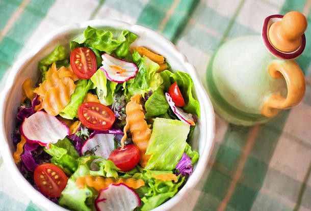
ЗАПОМНИТЬ:
1. Вегетарианское меню на неделю состоит из продуктов растительного происхождения, главным образом из зерновых продуктов, овощей, фруктов, орехов. Могут добавляться молочные продукты, яйца. Полностью исключается мясо животных, птицы, рыбы.
2. Как бы вы ни решили питаться с мясом или без него, питание всегда должно быть полноценным и сбалансированным. Главный вопрос, который возникает при этом стиле питания – это пополнение необходимого организму количества белка.
3. Источниками белка служат молочные продукты, яйца, бобовые (соя, фасоль, горох), орехи, шпинат, кольраби, цветная капуста и они обязательно должны присутствовать в ежедневном рационе.
4. Старайтесь, чтобы каждый день в вашем меню был салат из свежих овощей и фруктов. Салат – это здоровая, вкусная и малокалорийная пища, как самостоятельная, так и дополнительная к любому второму блюду для лучшего переваривания и усвоения. Пусть на столе всегда стоят сухофрукты, орехи, свежие фрукты. Это вкусная и полезная еда нравится и моим домочадцам.